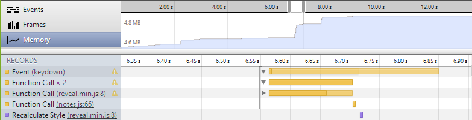

Levan Velijanashvili
me@stichoza.com
gplus.to/Stichoza
github/Stichoza
github/Stichoza
Developer Tools
Topics
DOM and Styles
Working With the Console
Debugging JavaScript
Improving Network Performance
Improving Performance
Memory Profiling
bad old times
no debuggers
early debuggers
lazy
alert()JavaScript
CSS
.sidebar-levels h3 a {
transition: border-color 0.2s ease-in-out;
border: 2px solid #bebebe;
border-radius: 50%;
color: #777777;
display: block;
margin-top: 7px;
text-align: center;
width: 30px;
}
@media screen and (min-width: 1060px) {
.sidebar-levels h3 a {
margin-right: 30px;
}
}
Edit Save Test
Chrome
Developer
Tools

Elements
DOM and CSS
Document Object Model and Styles
Let's see in action
Raw JavaScript
function hello(name) {
if (name.length > 16) {
alert("No!");
} else {
alert("Hi " + name + "!");
}
}
Minified JavaScript
function hello(n){if(n.length>16){alert("No!");}else{alert("Hi "+n+"!");}}